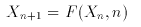
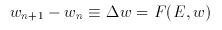
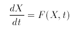
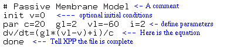
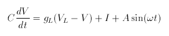

Return to the Table of Contents

where X is a vector in n-dimensional Euclidean space and F(X,n) is a function that may or may not depend on the iteration number, n . Discrete dynamical systems are often found in the neural network literature, for example in a model for back-propagation, the weights are adjusted according to some error rule:

where E is some error function. I will pretty much ignore discrete dynamics in order to concentrate on continuous time systems which for the basis for most models of biophysics and networks of neurons.

You should regard the ODE file as a framework for exploring the system; its main role is to set up the number of variables, parameters and functions. The actual right hand sides can be changed within the as can values of initial data, parameters, and boundary conditions. However, the dimension, the names of the variables and the names of the parameters are always fixed.
ODE files are ASCII readable files that the XPP parser reads to create machine useable code. They consist of combinations of lines each starting with a key letter. Lines cannot presently be continued onto the next line but the length of the lines is 256 characters. By convention XPP files end with the .ode extension.
I will start with an elementary 1 dimensional example and its corresponding ODE file. The simplest types of a continuous dynamical systems are those in which there is one scalar quantity. For example, the passive membrane:
Thus equation is easy to solve but will serve as a basis for the more complicated systems approached later. Since equations are required to have the form dX/dt = ... we divide by C to put it in the proper format. The ODE file has the following form:

I have attempted to explain all of the parts of the file in blue. NOTE: The sources for all of the equation files that are used in this tutorial are in the old format. But, in the tutorial, I will only use the new format. All of the equations files are available in both formats.
To continue on with the interactive part of the tutorial click on the equation for the passive membrane.
If you have set up your .mime.types and .mailcap files correctly then when you click on the equation, XPP will fire up. If you have not set up your files correctly, you will get the source of the file in the old style format.
There are up to 8 windows, 7 of which appear in the iconified fashion.
The main window contains the command line on top, menu items along the left, a graphics area in the middle and an information line at the bottom. The other windows are:
If XPP is in the middle of a calculation, the usual way to abort it is to use the (Esc) key. This will stop almost all calculations except some in which many integrations are performed. You abort those type of calculations by typing (/) on the keyboard, the slash key.
Change "gl" from 2 to 4 and reintegrate the equations. Use any of the three ways to do this. To see the entire trajectory you can click (X) (Enter) as above or use the (W) windowing command. Try (W) (F) to change the graph so the entire trajectory will fit into it. Try zooming into areas of this rather boring solution by clicking (W) (Z) and using the mouse to define a rectangle. Finally, use (W) (W) to manually define the viewing area.
In order to label the axes on your graph, click on (V) (2) to change the view. (This is how you plot phase-planes and lots of other stuff. Three dimensional plots are also possible.) A new window will pop up. Fill in the last two entries with the labels for the "X" and "Y" axes. Click on (Ok) or type (Tab) to accept this.
XPP always deletes the data from an integration each time one is run, thus in order to plot curves with various parameters, you have to Freeze the current curve before changing the parameters and reintegrating. Click (G) (F) to invoke the "freeze" menu. Click (F) again to bring up a window with entries. Change the color to, say, 5, and the key to say "gl=4". There are 10 colors 0 is white and 1-9 are red through blue. Accept this (click on (Ok) or type (Tab).) ( NOTE Netscape and Mosaic are sometimes greedy with colors, so that it may be that the colors you choose do not show up. If that is the case, try another color -- generally higher colors are more likely to be plotted.)
Now change "gl" back to 2 and reintegrate. Freeze this curve with the key "gl=2". Now, click (G) (F) (K) (K) to turn the "key" on and position it with the mouse. Click when done. The key should have appeared along with your two curves. It should look like:
( NOTE: Some of the pictures may look slightly different in that the parameter sliders will not be shown. These were made with earlier verions of XPP.)
Now save this as a postscript file by clicking (G) (P) and type in a filename in the command line .
NOTE 1. If you are following this tutorial then the filename for the ODE file is some terrible thing. Give your postscript file a nice name.
NOTE 2. Typing (Esc) will abort most commands such as saving to a file or integrating equations.
As with parameters, it is also easy to change the initial data. The easiest way to do it is to uniconify the initial condition window and click on one of the variables. Edit it and type (Enter) to accept it and move to the next one. Click on (Ok) or type (Tab) when done. Note that when you change the initial data in via the IC window, XPP does not automatically integrate the equations. You can also click (I) for other choices. The most common are
Finally, (C) will continue the integration for a longer period of time. Set V(0)=30 and integrate. Then continue the integration for 20 more milliseconds (until 40). Don't forget to replot (X) (Enter) so that all of the time axis is shown.
A useful option is also (I) (R) lets you perform multiple integrations as you vary a parameter or initial condition. Before you do this you might turn off the BELL.
Set the current I to be zero. The rest state is at -60 mV so let's integrate with with initial data from -100 to 0 mV in 10 steps of 10 mV each. First use the window command to set the window size to go from -100 mV to 0 mV and 0 to 20 ms. Type (W) (W) to bring up the window menu and type in the new dimensions. Type (I) (R) to bring up the integrate range menu. This has several items and should be filled in as shown:

The first item tells XPP which variable or parameter is to vary. Next tell how many steps you will take. Then first and last points should be stored. The "Cycle color" entry asks whether you want each trajectory to be a different color. Resetting the storage tells XPP not to save every trajectory and "Use old i.c.'s" means to use the same initial conditions for each integration except for the variable that is changing. ( Note: In newer versions of XPP, the last item asks whether you want to make a movie. Throughout the tutorial, you should choose No for this.) Click on (Ok) or type (TAB) to do the integration. You will see 11 curves with the first and last red. ( Note. While you only asked for 10, XPP treats the loop as though it was from i=0...i=10. )
It should be clear from this simulation that all roads lead to Rome. That is, every initial condition ultimately ends up at rest.
So far we have just looked at the actual trajectories. XPP lets you examine the actual numerical values very easily and write them to a text file for other processing. Click on the iconified Data Browser/Viewer to manipulate the numbers you have computed. You will see two columns corresponding to time and to membrane potential. Use the arrow keys to move up and down the data file. Other keys for scrolling are (Home) (End) (PgUp) and (PgDn). You can find the voltage at time t=12.0 by clicking on (Find) and typing in T and 12 for the prompted quantities and then clicking (OK). The value of the voltage at t=12 will show up on the top line. You needn't be exact; XPP finds the closest value. Find the approximate time at which V = -30 mV.
Suppose you want to compute the total leak current, gl*(V-VL) . In the original ODE file, you could compute this "AUXILIARY" quantity, but you don't have to leave the progam to do it temporarily. Just use the add column capabilities of the Viewer. Click on (Add Col) type in IL when asked for the name of the column to add. Then type in the above formula and click (OK). A new column is added with the name IL which has the leak current. Plot this as a function of time.
XPP graphics is not the world's greatest so for fancier plots, you will probably want to save the numerical results of your simulations. The Data Viewer lets you write the numbers as an ascii file. Click on (Write), type in a file name, and click (OK) to save all the numbers in a file.
The voltage V=-60 is called a fixed point or equilibrium point for the differential equation. At V=-60 the rate of change of the voltage is zero. Any set of variables for which the rates of each is zero is called a fixed point of the dynamical system. This is because if you start there, you cannot ever change. However, what happens if you are near the fixed point but not exactly on it? Do you tend toward it or move away? This brings up the notion of stability which roughly says that a fixed point is stable is nearby initial conditions stay near to it. We say it is asymptotically stable if nearby initial conditions actually tend toward it as t tends to infinity. Fixed points are often called "critical points," "rest states," or "singular points." The stability of a fixed point for a continuous autonomous differential equation is easy to determine. Linearize about the fixed point obtaining a matrix, A, . (If there are n differential equations, the matrix will be n X n .) If all of the eigenvalues of A have negative real parts then the fixed point is asymptotically stable . If there is at least one eigenvalue with a positive real part then the fixed point is unstable . When the eigenvalues have zero real part then we cannot tell from the linearized equations.
To find a fixed point using XPP, click on (S) (G). This invokes a Newton solver to find the fixed point. Answer (N) to both of the questions. A new window appears that has information about the fixed point and stability:


After integrating the equation, add a column to the data browser that gives the instantaneous current a*sin(w*t) where "w" is the frequency. Plot both the instantaneous current and the voltage on the same plot so that you can see that the phase of the voltage trails the current. Use A=50 and initialize V=-60, the resting potential. Set I=0 as well. If you are stuck on how to write the file, click HERE.


 Table of Contents
Main Menu Items
ODE Files and Examples
Numerics Menu
File Menu
Freeze Menu
AUTO Menu
Data Browser
I/O and Hardcopy
XPP Basics
Nonlinear ODEs
Two-dimensions
Three-dimensions
and Beyond
Phase Equations
Chaos
Table of Contents
Main Menu Items
ODE Files and Examples
Numerics Menu
File Menu
Freeze Menu
AUTO Menu
Data Browser
I/O and Hardcopy
XPP Basics
Nonlinear ODEs
Two-dimensions
Three-dimensions
and Beyond
Phase Equations
Chaos